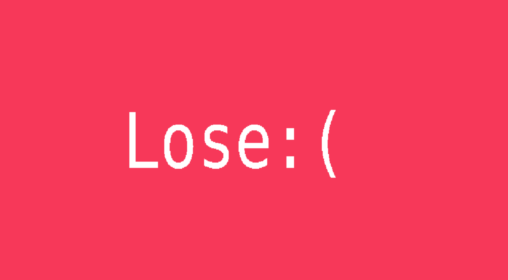
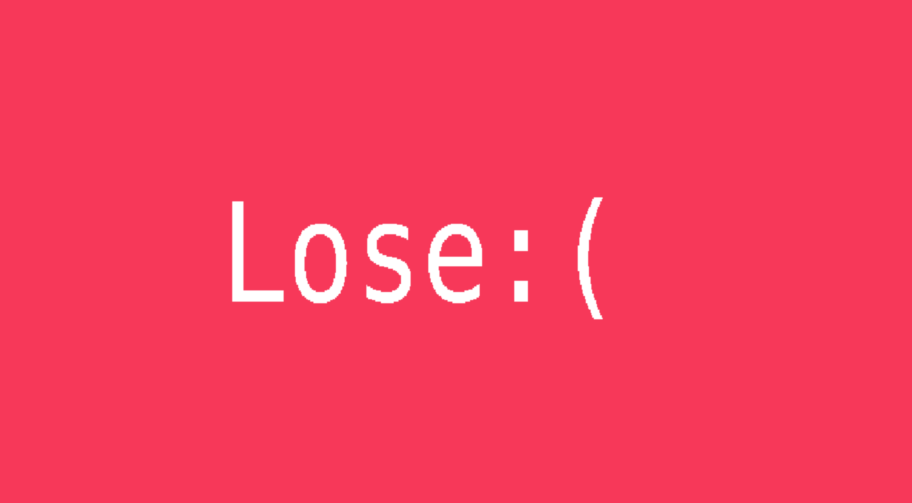
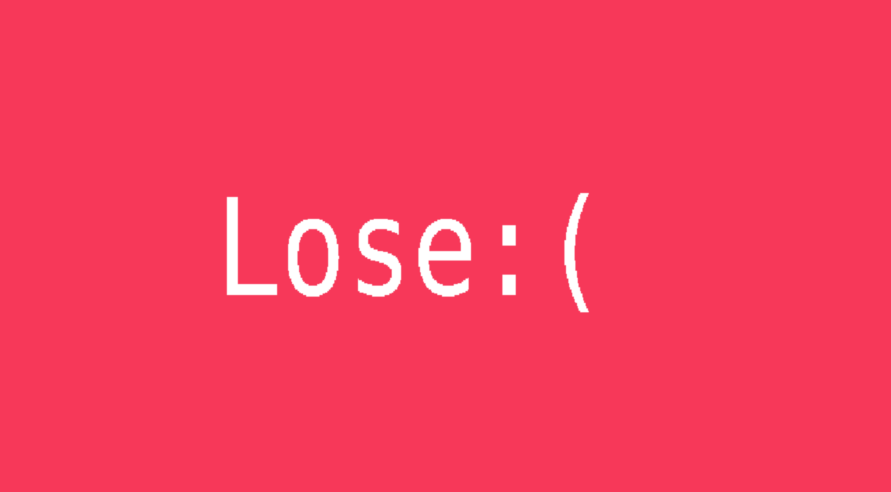
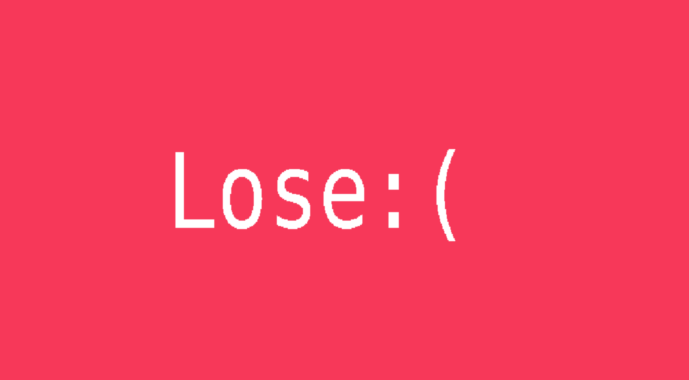

A post mortem in games is a look back at what could be improved. Write a brief (2-3 paragraphs) on what could be improved if you had an additional 8 weeks to work on this project. Where would you allocate time, what tools would you build, would you use any different tools, etc.